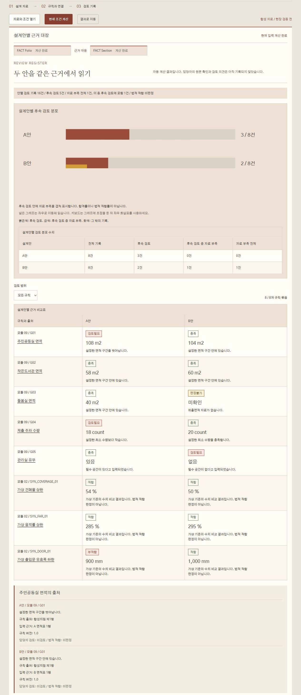

FACTFolio
설계안 비교와 기준 검토
Design comparison and criteria review
FACT Folio는 설계안의 차이를 같은 기준으로 비교하고, 확인한 근거와 남은 검토 사항을 한 기록에 모읍니다. 공모지침의 실별 요구면적과 허용범위, 최소 수량, 필수 공간, 그리고 프로젝트에 입력한 설계 규칙을 두 안에 같은 방식으로 적용해 설계안별 근거 대장으로 정리하고, 항목마다 원래 값과 환산값, 산정 기준, 출처를 함께 남깁니다. 점수를 매기거나 순위를 정하지 않고, 법규 적합을 판정하지도 않습니다. 판단에 필요한 사실과 근거를 정리해 심사위원과 검토자에게 건넵니다. 면적 검토 엔진도, 설계 규칙 모듈과의 연결도 합성 자료로 검증을 마쳤습니다.
FACT Folio compares design options on the same criteria and gathers the evidence checked and the items still to review into one record. It applies the brief's required room areas and tolerances, minimum counts and required spaces, together with the design rules entered for the project, to both entries in the same way, lays them out in a review register by entry, and keeps the original value, converted value, area definition and source for every item. It does not score or rank entries, and it does not judge legal compliance. It hands the jury and reviewers the facts and evidence their judgment needs. The area review engine and its link with the design rule module have been verified on synthetic data.
- 유형
- Type
- 설계안 비교와 기준 검토 도구, 설계공모 심사 보조Design comparison and criteria review, support for competition juries
- 구성
- Modules
- 모듈 09 Folio(면적, 수량, 필수 공간 비교와 검토 기록)와 모듈 02 Section(입력한 설계 규칙의 근거와 결과 연결)Module 09 Folio (area, count and required-space comparison with review records) and module 02 Section (links the evidence and results of entered design rules)
- 입력
- Input
- 공모지침 규칙(면적, 수량, 필수 공간), 두 안의 면적표와 공간 목록, 규칙 계산용 값(대지면적, 건축면적, 용적률 산정용 면적, 출입문 유효폭). 화면이나 JSON으로 입력하고, 사용자가 제공한 자료에는 출처를 함께 기록Brief rules for area, count and required spaces, the area schedules and space lists of two entries, and values for rule checks (site area, building area, floor area for the floor area ratio, door clear width), entered on screen or as JSON, with sources recorded for user-provided data
- 출력
- Output
- 설계안별 근거 대장(규칙마다 두 안의 판정, 값, 출처), 후속 검토와 자료 부족 집계, 민감도 결과, 검토 의견 기록, 검토용 보고서(HTML), 프로젝트 파일과 작업 파일, CSV와 JSONA review register by entry (checks, values and sources for both entries under each rule), counts of items for follow-up and with missing data, sensitivity results, reviewer notes, a review report (HTML), project and work files, CSV and JSON
- 모델
- Model
- 09.area-review.1.2.0
- 실행
- Runs on
- 사용자 컴퓨터의 로컬 서버, 외부 API 키 불필요A local server on the user's computer, no external API keys
- 개발
- Team
- KAIST 미래공간연구실, FACT 연구센터KAIST Future Space Lab, FACT Research Center
- 검증
- Status
- 합성 자료 검증 완료 (2026년 11월)Verified on synthetic data, November 2026
설계공모 심사에서 실별 면적과 필수 공간을 확인하는 일은 기본이지만, 출품안마다 자료의 형식이 달라 같은 기준으로 대조하는 데 손이 많이 갑니다. 숫자를 옮겨 적는 과정에서 빠진 값이 0으로 읽히거나, 산정 기준이 다른 면적이 그대로 비교될 수 있습니다.
Checking room areas and required spaces is a basic part of reviewing competition entries, but each entry presents its data differently, so comparing them on the same terms takes effort. When figures are copied by hand, a missing value can be read as zero, or areas measured on different definitions can be compared as if they were the same.
단위와 산정 기준이 제각각입니다
Units and definitions differ
㎡와 ㎠가 섞이거나 같은 실이라도 면적을 재는 기준이 다르면, 숫자를 나란히 놓아도 바로 비교할 수 없습니다.
When ㎡ and ㎠ are mixed, or the same room is measured on a different definition, numbers placed side by side are not yet comparable.
빠진 자료와 없는 공간은 다릅니다
Missing is not the same as absent
값을 내지 않은 것, 0을 낸 것, 공간이 없다고 밝힌 것은 서로 다른 뜻입니다. 이를 섞으면 판단이 흐려집니다.
Not submitting a value, submitting zero and stating that a space does not exist mean different things. Mixing them blurs the review.
경계 근처의 판정은 가정에 따라 바뀝니다
Borderline checks depend on assumptions
허용범위 경계에 가까운 항목은 허용편차나 면적을 재는 방식을 조금만 바꿔도 결과가 달라집니다. 이 민감도를 함께 봐야 합니다.
Items near a limit can change with a small shift in tolerance or in how areas are measured. That sensitivity belongs in the review.
BIM 제출이 늘어납니다
More entries will arrive as BIM
정부는 공공공사의 BIM 적용을 공사비 기준으로 단계적으로 넓혀, 2026년 500억 원 이상, 2028년 300억 원 이상, 2030년까지 모든 공공공사로 확대할 계획입니다. 심사 단계에서 제출 자료를 같은 기준으로 확인할 필요도 함께 커집니다.
Korea plans to extend BIM requirements for public construction by project cost, from 50 billion won and above in 2026 and 30 billion won and above in 2028 to all public projects by 2030. The need to check submissions on the same terms at the review stage grows with it.
BIM 적용 일정: 국토교통부 「스마트 건설 활성화 방안」(2022년 7월)과 관련 보도.
BIM schedule: Ministry of Land, Infrastructure and Transport, Smart Construction Activation Plan (July 2022), and related press reports.
- 01 / RULES
지침과 규칙 정리
Brief and rules
공모지침의 요구면적과 허용편차, 최소 수량, 필수 공간을 항목별 규칙으로 옮기고, 건폐율이나 용적률 상한, 출입문 유효폭 하한처럼 함께 볼 설계 규칙도 둡니다. 규칙마다 출처와 버전을 붙입니다.
Required areas and tolerances, minimum counts and required spaces in the brief become item rules, alongside design rules to check, such as caps on building coverage or floor area ratio and a minimum door clear width. Each rule carries its source and version.
- IN
- Competition brief, design rules
- OUT
- Rules, JSON
- 02 / READ
제출값 읽기
Reading submissions
두 안의 면적표와 공간 목록, 규칙 계산에 필요한 값에서 값과 단위, 면적 산정 기준, 제출 근거를 함께 읽습니다. 면적은 ㎡로 환산하되 원래 값도 그대로 보관하고, 어느 자료가 같은 설계안인지 명시해 짝짓습니다.
Values, units, area definitions and sources are read together from each entry's area schedule, space list and the values needed for rule checks. Areas are converted to ㎡ with the original values kept, and the data for each entry is matched explicitly.
- IN
- Area schedules, space lists, rule inputs
- OUT
- Values in square meters, with sources
- 03 / CHECK
같은 규칙으로 대조
One set of rules
두 안에 같은 규칙을 적용해 지침 항목은 충족, 불충족, 판정불가로, 설계 규칙은 적합, 부적합, 정보 부족, 적용 제외로 계산합니다. 지침 항목은 허용편차와 공통 측정 편향을 바꾼 9가지 조건에서 다시 계산합니다.
The same rules give met, not met or on hold for each brief item, and pass, fail, insufficient information or not applicable for each design rule, in both entries. Brief items are then recomputed under nine conditions of tolerance and common measurement bias.
- IN
- Rules, values
- OUT
- Checks, differences, 9 conditions
- 04 / RECORD
근거 대장에 기록
Review register
판정마다 원자료 값과 환산값, 허용범위, 산정 기준, 규칙 출처, 입력 해시를 설계안별 근거 대장에 남기고, 담당자 검토와 법적 적합은 미검토, 미판정으로 따로 표시합니다. 확인 요청과 의견은 그 결과에 연결해 CSV와 JSON으로 내보냅니다.
Each check keeps the raw and converted values, allowed range, area definition, rule source and input hash in the review register, with reviewer status and legal compliance shown separately as not yet reviewed and not judged. Requests and notes are linked to that result and exported as CSV and JSON.
- IN
- Results, reviewer notes
- OUT
- Review register, CSV, JSON
- 충족Met
조건 안에 있습니다
Within the condition
제출값이 허용범위 안에 있거나 최소 수량 이상이고, 필수 공간이 있다고 확인된 경우입니다. 경계값은 범위 안으로 봅니다.
The value is within the allowed range or at least the minimum count, or the required space is confirmed. Values on a limit count as inside.
- 불충족Not met
조건을 벗어났습니다
Outside the condition
설정한 범위를 벗어났거나 필수 공간이 없다고 명시된 경우입니다. 출품안의 탈락을 뜻하지 않으며, 심사위원이 확인할 항목으로 표시합니다.
The value is outside the set range, or the entry states that a required space does not exist. It does not eliminate the entry. It marks an item for the jury to look at.
- 판정불가On hold
판정을 보류합니다
Held, not judged
자료가 없거나 면적 산정 기준이 지침과 달라 계산을 보류한 경우입니다. 빠진 자료를 0으로 채우지 않습니다.
There is no data, or the area definition differs from the brief, so the check is held. Missing data is never filled with zero.
null자료 미확인
Unconfirmed
값이 제출되지 않았거나 확인되지 않았습니다. 판정불가로 보류합니다.
No value was submitted or confirmed. The check is held.
0실제 0
A real zero
0이라는 값이 제출된 것으로 보고 그대로 계산합니다.
Zero was submitted, and it is computed as zero.
false확인된 부재
Confirmed absence
필수 공간이 없다고 확인된 경우입니다. 불충족으로 판정합니다.
The required space is confirmed absent. The check is not met.
설계 규칙은 입력한 기준과 값을 비교해 적합이나 부적합으로 나오며, 정보 부족과 적용 제외는 바꾸지 않고 그대로 표시합니다. 이 적합, 부적합은 수치 비교의 결과일 뿐 법적 적합 판정이 아닙니다. 근거 대장 화면에서는 지침 항목의 불충족을 검토필요로 표시하고, 다시 살펴볼 기록을 후속 검토로 모아 그 가운데 자료가 부족한 기록을 따로 셉니다.
Design rules compare entered limits with entered values and come out as pass or fail, while insufficient information and not applicable are shown as they are. Pass and fail here are only the result of a numeric comparison, not a legal compliance judgment. On the register screen, a brief item that is not met appears as needs review, and the records to look at again are gathered as items for follow-up, with those that have missing data counted separately.
판정 가능 비율(예: 5개 항목 중 4개, 80%)은 자료와 산정 기준을 갖춰 판정할 수 있었던 범위를 뜻하며, 지침 적합률이 아닙니다.
The share of judged items (for example 4 of 5, 80%) is the part that had the data and definitions needed for a check. It is not a compliance rate.
- 01
점수와 순위, 당락을 만들지 않습니다
No scores, rankings or verdicts
출품안을 합산 점수로 줄 세우지 않고, 두 모듈의 결과를 합쳐 점수나 자동 법규 판정을 만들지도 않습니다. 항목별 사실과 근거를 나란히 보여 주고, 판단은 심사위원에게 남깁니다. 심사 의견은 계산된 판정을 덮어쓰지 않고 따로 기록됩니다.
Entries are never ranked by a combined score, and the results of the two modules are never merged into a score or an automatic code verdict. Item facts and evidence are shown side by side, and the decision stays with the jury. Reviewer notes are recorded separately and never overwrite a computed check.
- 02
모르는 것은 모른다고 표시합니다
Unknown stays unknown
자료 미확인과 실제 0, 확인된 부재를 구분합니다. 면적 산정 기준이 지침과 다르면 숫자가 있어도 판정을 보류하고, 설계 규칙의 정보 부족과 적용 제외도 다른 상태로 바꾸지 않습니다.
Unconfirmed data, a real zero and a confirmed absence are kept apart. If an area definition differs from the brief, the check is held even when a number is present, and insufficient information or not applicable on a design rule is never turned into another state.
- 03
같은 입력에는 같은 결과가 나옵니다
Same input, same result
계산에 난수를 쓰지 않습니다. 입력과 지침, 모델에 SHA-256 해시를 붙여, 결과가 어떤 조건에서 나왔는지 나중에 다시 확인할 수 있습니다.
No randomness is used in the calculation. Inputs, brief and model carry SHA-256 hashes, so the conditions behind any result can be checked again later.
- 04
모든 판정에 근거가 따라갑니다
Every check carries its evidence
판정마다 원자료 값, 환산값, 허용범위, 산정 기준, 규칙 출처와 제출 근거가 함께 남습니다. 제출 근거는 입력한 사람이 적은 참조이므로, 원문과 맞는지는 담당자가 따로 확인하고 화면에도 미검토로 표시합니다.
Each check keeps the raw value, converted value, allowed range, area definition, rule source and submitted source. Sources are references entered by people, so a reviewer checks them against the original documents separately, and the screen marks them as not yet reviewed.
합성 예제의 계산 결과입니다. 민감도는 가정한 조건에서 판정이 어떻게 달라지는지 보여 줄 뿐이며, 확률이나 신뢰구간, 실제 측정 오차의 분포가 아닙니다. 수량과 공간 유무는 면적 편향의 영향을 받지 않습니다.
Results for the synthetic example. Sensitivity shows how checks change under assumed conditions. It is not a probability, a confidence interval or a distribution of real measurement error. Counts and required spaces are not affected by the area bias.

- F.01
설계안별 근거 대장
Review register
공모지침 항목과 설계 규칙을 한 표에 묶어, 두 안을 같은 근거에서 읽습니다. 칸마다 판정과 값, 그 이유가 함께 놓입니다. 표 위에는 전체 기록과 후속 검토, 자료 부족 수를 정리하고, 자동 계산 결과일 뿐 담당자 확인과 법적 적합 판정은 아직이라는 점을 함께 표시합니다. 합성 예제에서는 지침 5개와 가상 설계 규칙 3개가 두 안에 적용되어 기록 16개가 만들어집니다.
Brief items and design rules sit in one table, so both entries are read on the same evidence. Each cell holds the check, the value and the reason. Above the table, counts of all records, items for follow-up and missing data are summarized, with a note that these are automatic results not yet confirmed by a reviewer or judged for legal compliance. In the synthetic example, five brief items and three virtual design rules applied to two entries give sixteen records.
- F.02
검토 범위 필터
Review scope filter
모든 규칙, 후속 검토, 자료 부족으로 표를 걸러 보고, 지금 보이는 규칙 묶음 수(예: 8 / 8개)를 함께 표시합니다.
The table can be filtered to all rules, items for follow-up or missing data, with the number of rule pairs in view (for example 8 of 8).
- F.03
설계안별 후속 검토 분포
Follow-up by entry
안마다 후속 검토가 필요한 기록과 그 가운데 자료가 부족한 기록을 막대와 수치표로 보여 줍니다. 합격률이나 법적 적합률이 아닙니다.
For each entry, a bar and a table show the records that need follow-up and, among them, those with missing data. It is not a pass rate or a compliance rate.
- F.04
출처 상세
Source details
규칙 이름을 누르면 두 안 각각의 규칙 출처, 입력 근거, 규칙 버전이 열리고, 담당자 검토와 법적 적합은 미검토, 미판정으로 따로 남습니다. 면적 규칙은 목표 면적, 허용편차, 상한과 하한, 산정 기준, 설계 자료 버전을 함께 보여 주고, 설계 규칙은 연산자, 기준값, 유효 기간, 적용 조건을 원 자료에 있는 범위에서 보여 줍니다. 원 자료에 없는 값은 채우지 않습니다.
Selecting a rule opens the rule source, input evidence and rule version for each entry, with reviewer status and legal compliance kept separately as not yet reviewed and not judged. Area rules also show the target area, tolerance, upper and lower limits, area definition and design data version, and design rules show the operator, threshold, validity period and conditions of use as far as the source data gives them. Values missing from the source are left blank.
- F.05
자료와 규칙 연결
Data and rule links
두 안의 면적표와 공간 목록, 규칙 계산에 필요한 대지면적, 건축면적, 용적률 산정용 면적, 출입문 유효폭을 입력합니다. 면적과 폭은 소수와 원래 단위를 그대로 받고, 어느 자료가 같은 설계안인지 명시해 식별자가 바뀌거나 겹치면 임의로 짝짓지 않습니다.
Area schedules, space lists and the values for rule checks (site area, building area, floor area for the floor area ratio, door clear width) are entered for both entries. Areas and widths keep decimals and their original units, and entries are matched explicitly, so changed or duplicated identifiers are never paired by guesswork.
- F.06
프로젝트 저장과 복원
Project save and restore
입력과 연결 조건을 프로젝트 파일로 내려받고, 그 파일을 다시 열어 입력을 복원한 뒤 다시 계산합니다. 현재 조건을 계산한 뒤에는 프로젝트 메모와 검토 의견, 계산 요약과 근거, 입력 해시를 담은 검토용 보고서를 HTML로 저장하고, 기준 조건과 계산한 아홉 조건의 판정 변화를 CSV로 저장합니다. 입력이 바뀌어 결과와 맞지 않으면 보고서를 만들지 않습니다. 면적 검토 모듈의 개별 작업 화면에서는 검토 의견 기록, 작업 파일 인계, 인쇄용 화면도 쓸 수 있습니다.
Inputs and link settings are downloaded as a project file, and opening that file restores the inputs for a fresh calculation. Once the current conditions are calculated, a review report with project notes, reviewer comments, the calculation summary, evidence and input hashes can be saved as HTML, and the change in checks between the base condition and nine calculated conditions can be saved as CSV. No report is produced while the inputs no longer match the results. The area review module's own workbench also keeps reviewer notes, work file handoff and a print view.
- ㎡, ㎠, ㎟로 적은 같은 면적이 같은 결과를 냅니다.The same area written in ㎡, ㎠ or ㎟ gives the same result.
- 목표 100㎡, 허용편차 5%에서 95와 105㎡는 충족, 94.99999와 105.00001㎡는 불충족입니다. 모델 1.2.0은 경계 바로 밖의 십진값을 충족으로 바꾸지 않습니다 (11월 13일 자동 검사).With a 100 ㎡ target and 5% tolerance, 95 and 105 ㎡ are met, while 94.99999 and 105.00001 ㎡ are not. Model 1.2.0 never turns a decimal value just outside a limit into a pass (automated tests, November 13).
- 음수, 숫자가 아닌 값, 지원하지 않는 단위, 중복 식별자는 계산하지 않고 거부합니다.Negative or non-numeric values, unsupported units and duplicate identifiers are rejected.
- 두 안에 같은 자료를 넣으면 판정과 수치가 같고 차이는 0입니다.Identical data in both entries gives identical checks and a zero difference.
- 같은 입력을 따로 실행해도 결과 파일이 바이트 단위로 같습니다 (11월 2일 점검).Separate runs on the same input produce byte-identical result files (checked November 2).
- 작업 파일을 디스크에 저장했다가 다시 읽어도 입력 해시와 검토 의견이 그대로 남습니다 (11월 7일 자동 검사).A work file written to disk and read back keeps the same input hash and reviewer notes (automated test, November 7).
- 지침 항목 5개와 가상 설계 규칙 3개를 두 안에 적용하면 근거 기록 16개가 만들어지고, 판정불가, 정보 부족, 적용 제외는 바뀌지 않고 그대로 남습니다 (11월 8일 자동 검사).Applying five brief items and three virtual design rules to two entries gives sixteen evidence records, and on hold, insufficient information and not applicable stay unchanged (automated tests, November 8).
- 식별자가 바뀌었거나 겹치는 설계안은 임의로 짝짓지 않습니다 (11월 8일 자동 검사).Entries with changed or duplicated identifiers are never paired by guesswork (automated tests, November 8).
- 새 작업 화면의 배치와 본문 글자 크기를 1280, 640, 390px 너비에서 확인했고, 프로젝트 파일을 내려받아 다시 열어 입력을 복원하고 다시 계산했습니다 (11월 8일, 실제 데스크톱 브라우저, 합성 자료).The layout and body text size of the new working screen were checked at 1280, 640 and 390 px, and a project file was downloaded, reopened, restored and recalculated (real desktop browser, synthetic data, November 8).
- 조건에 따른 판정 변화를 실제 브라우저에서 CSV로 저장해 20행, 33열을 확인했습니다 (11월 11일, 합성 자료).The change in checks across conditions was saved as CSV in a real browser and read back as 20 rows and 33 columns (synthetic data, November 11).
- 보관된 원 계산과 화면에 전달된 기록 379건을 브라우저에서 대조해 불일치 0건이었고, 저장한 HTML 보고서에서 계산 기록을 다시 꺼내 실행해도 379건 모두 일치했습니다. 이 대조는 담당자 승인이나 수치 정확도의 별도 확인을 뜻하지 않습니다 (11월 12일).In a browser, 379 stored calculation records were checked against the records passed to the screen with no mismatch, and re-running the records extracted from a saved HTML report matched all 379 as well. This check is not reviewer approval or a separate check of numerical accuracy (November 12).
- 저장한 HTML 보고서에 입력과 계산 기록, 규칙 16행과 평가 조건 16행, 자료 부족 2건이 그대로 남았고, 데스크톱과 390px 화면에서 가로 넘침과 브라우저 오류가 없었습니다 (11월 12일).A saved HTML report kept the input and calculation records, 16 rule rows, 16 condition rows and 2 missing data items, and the desktop and 390 px screens showed no horizontal overflow and no browser errors (November 12).
- 실제 공모지침과 출품안 자료로 한 검증Testing on a real brief and real entries
- 심사위원이 만든 정답표와의 대조Comparison with an answer sheet made by reviewers
- 도면이나 BIM 형상에서 면적을 직접 계산하는 기능 (지금은 입력된 면적을 사용)Computing areas from drawings or BIM geometry, which currently relies on entered areas
- 실제 법규 원문으로 한 규칙 검증, IFC와 외부 법규 서비스, 행태 시뮬레이션 엔진과의 연결Rule checks against actual code texts, and links to IFC, external code-check services and behavior simulation engines
- 검토 의견을 담은 작업 파일을 실제 브라우저에서 넘기고 받는 확인, 새 화면의 키보드 조작 확인Handing over a work file with reviewer notes in a real browser, and keyboard use of the new screen
- 실제 휴대전화와 스크린리더로 하는 확인, 실무자가 직접 해 보는 과업 검증Checks on real phones and with screen readers, and task tests with practitioners
- 실물 인쇄, 여러 사용자의 동시 편집과 계정 권한Printing on paper, and multi-user editing with accounts and permissions
실제 공모 자료와 심사 현장에서의 검증은 다음 단계에서 진행합니다. 현재 Folio는 법규 적합성이나 인증을 판정하지 않으며, 합성 예제의 설계 규칙은 계산 시험용 가정이라 그 적합, 부적합도 법적 판정이 아닙니다. 사용자 제공 자료에 붙는 출처 기록은 자료가 어디서 왔는지를 남길 뿐, 원문의 진위나 수치의 정확성을 확인했다는 뜻은 아닙니다.
Testing with real competition data and in a real jury comes next. Folio does not currently judge legal compliance or certification, and the design rules in the synthetic example are test assumptions, so their pass or fail is not a legal judgment either. Source records on user-provided data show where the data came from. They do not confirm that the source is authentic or that the figures are correct.
최종 목표는 공공주택과 지자체 공공건축 설계공모의 여러 출품안을 같은 한국인 페르소나 인구와 같은 규칙 엔진으로 돌려, 공모지침 적합성과 외부 법규 검토 결과, 생활 동선, 보행약자 피난, 로봇 대응 성능을 한 장의 비교표와 입주민의 하루 시각화로 심사위원에게 전하는 것입니다.
The goal is to run every entry in public housing and public building competitions through the same synthetic Korean population and the same rule engine, and to give the jury one comparison sheet and a day-in-the-life view covering brief compliance, external code review results, daily circulation, evacuation for people with reduced mobility and robot readiness.
- 01합성 자료 검증 완료Verified, synthetic data
공모지침 적합성
Brief compliance
실별 요구면적과 허용범위, 최소 수량, 필수 공간
Room areas and tolerances, minimum counts, required spaces
- 02합성 예제 구현, 법규 연결 예정Built on synthetic rules, code links planned
설계 규칙과 법규 검토 결과
Design rules and code review results
입력한 설계 규칙의 근거와 결과를 지침 항목과 같은 대장에 연결합니다. 합성 예제의 가상 규칙으로 구현했고, 실제 법규 원문 검증과 무장애(BF) 기준을 포함한 외부 법규 검토 결과의 연결은 다음 단계입니다. Folio가 법규 적합을 판정하지는 않습니다.
The evidence and results of entered design rules are linked into the same register as the brief items. This works with virtual rules in the synthetic example, while checks against actual code texts and links to external code review results, including barrier-free criteria, come next. Folio itself does not judge compliance.
- 03행태 시뮬레이션 연동 예정Behavior engine, planned
입주민 일과 동선
Daily circulation
평균 보행거리, 출근 시간 승강기 대기
Average walking distance, elevator waits at the morning peak
- 04연동 예정Planned
보행약자 피난 안전성
Evacuation for people with reduced mobility
피난 소요 시간(RSET), 막다른 복도와 계단 합류 지연
Required safe egress time (RSET), dead-end corridors and merging delays at stairs
- 05연동 예정Planned
로봇 친화 준비도
Robot readiness
단차와 로봇 우회 경로, 물류 거점
Level changes, robot detours and logistics hubs
- 06개발 예정Planned
입주민의 하루
A day in the life
같은 인구가 두 안에서 보내는 하루를 나란히 시각화
The same population living a day in each entry, shown side by side
확장 단계에서는 모든 출품안에 같은 난수 시드로 만든 같은 한국인 코호트(고령자, 유모차 동반 보호자, 휠체어 이용자, 직장인, 배송 로봇)를 넣어 비교할 계획입니다. 현재 Folio는 난수를 쓰지 않고 두 안만 비교하며, 같은 시드로 공정성을 검증한 결과는 아직 없습니다. 같은 시드만으로 공정성이 보장되지는 않으므로 입력 누락과 평가 방법도 함께 공개합니다.
In the expansion stage, every entry is planned to receive the same Korean cohorts generated from the same random seed, including older adults, parents with strollers, wheelchair users, office workers and delivery robots. Folio today uses no randomness and compares two entries, and fairness under a shared seed has not been tested. A shared seed alone does not make a review fair, so missing inputs and the evaluation method will be disclosed as well.
진행 순서Steps- STEP 01
실제 자료 확보
Real data
사용 허가를 받은 공모지침 1건과 두 출품안의 익명화한 면적표를 확보하고, 두 명의 검토자가 정한 판정과 대조합니다.
Obtain one brief and the anonymized area schedules of two entries with permission, and compare the results with checks settled by two reviewers.
- STEP 02
입력 도구
Input tool
지침과 두 안의 값은 지금도 화면에서 직접 입력할 수 있습니다. 다음은 면적표 CSV 가져오기와, 근거를 원문의 행이나 모델 객체까지 이어 주는 연결입니다.
Brief items and the values of both entries can already be entered on screen. Next come importing area schedules from CSV and tracing evidence to rows in the source or objects in the model.
- STEP 03
엔진 연결
Engine links
설계 규칙 모듈은 합성 예제로 먼저 연결했습니다. 외부 법규 서비스와 행태 시뮬레이션 엔진이 준비되면 같은 방식으로 연결하고, 통합 비교표는 2027년 하반기 착수를 목표로 합니다. 이때도 자동 당락이나 합산 점수는 만들지 않습니다.
The design rule module is already linked on the synthetic example. External code-check services and behavior simulation engines will be linked the same way once they are ready, aiming to start the integrated comparison sheet in the second half of 2027, still without automatic verdicts or combined scores.
실제 공모 자료로 함께 검증할 발주 기관, 공모 운영 기관, 연구 협력 기관을 찾고 있습니다. 검토하려는 공모의 유형과 일정을 알려 주시면 합성 예제로 시연을 준비하겠습니다.
We are looking for commissioning bodies, competition organizers and research partners to test it with real competition data. Tell us the type and schedule of the competition you have in mind, and we will prepare a demo on the synthetic example.
fact.kaist@gmail.comfact.kaist@gmail.com
센터장 차승현 교수, KAIST 문화기술대학원Director, Prof. Seung Hyun Cha, KAIST Graduate School of Culture Technology
- Note이 페이지의 예제는 합성 자료이며 실제 공모, 기관, 출품안과 관계없습니다.The examples on this page are synthetic and unrelated to any real competition, organization or entry.
- Note판정 결과는 심사위원의 판단을 돕기 위한 참고 자료이며, 법규 적합성 검토나 인증을 대신하지 않습니다.Checks are reference material for the jury. They do not replace legal compliance review or certification.